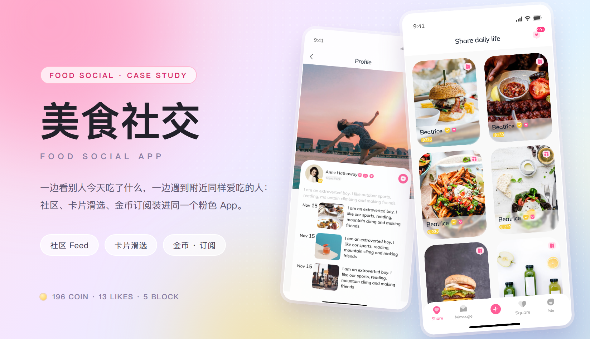
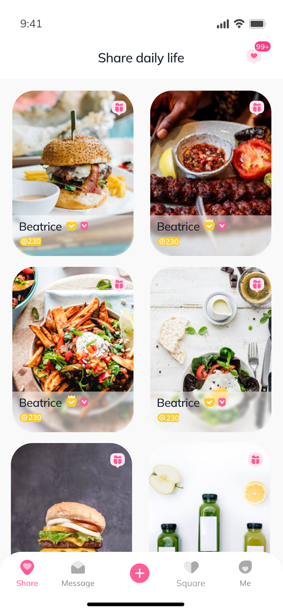
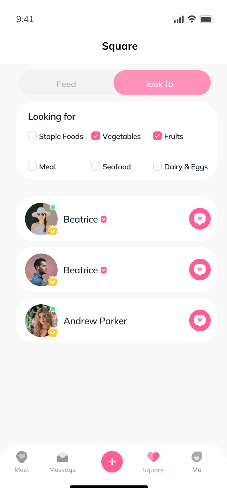
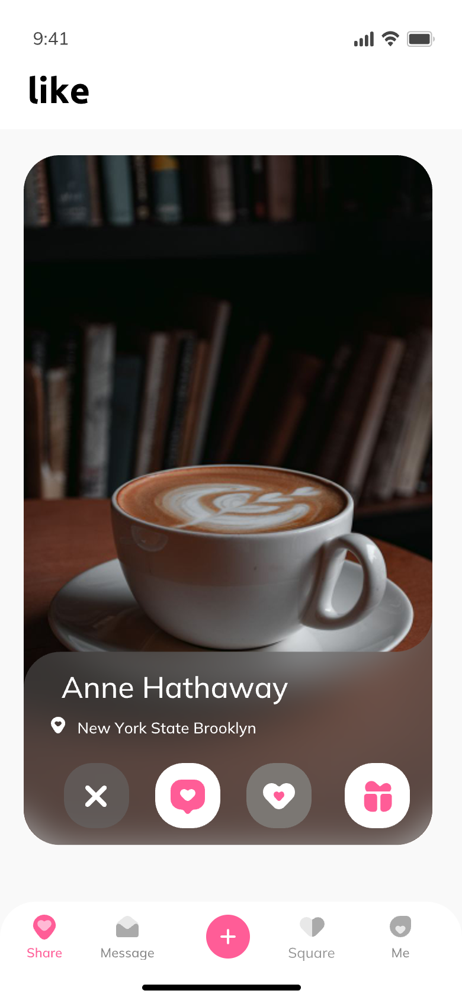
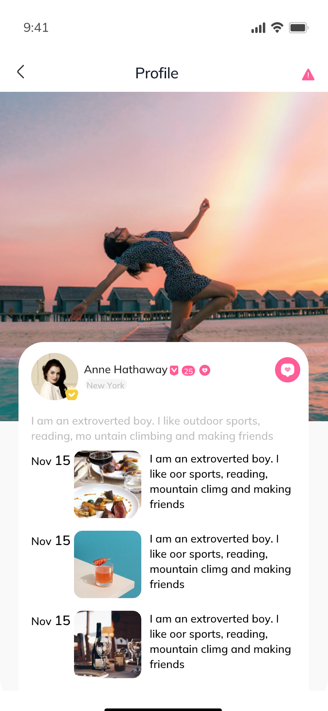
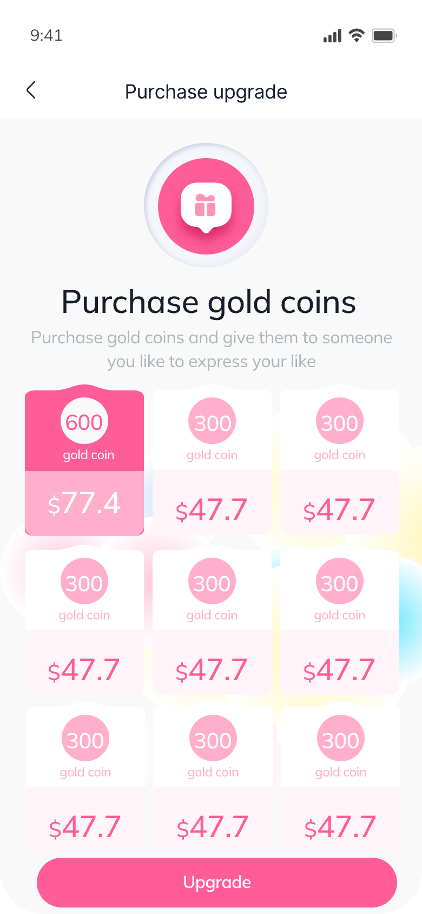

美食社交 App · 美食社区与同城约饭
这款 App 把「吃饭」当成社交的由头：有人发今天做的菜，有人刷别人的餐桌顺便认识人，也有人只想找附近今晚能一起吃饭的伴。旧版只有一个信息流，两种意图挤在同一条流里——想安静看图的人被推荐卡片打断，想找人的人刷很久也碰不到一个能聊的。这次重做先拆模式，再把照片摆到文字前面，最后用金币把喜欢、送礼与订阅串成一条付费路径。视觉取美食本身的颜色：玫瑰粉做主操作，淡紫与柠檬黄做氛围，墨色只留给文字。
主视觉

项目背景
海外市场 · 社区 + 交友
这款 App 面向海外年轻用户，内容与人都由「吃」这件事带出来：有人在社区里发今天做的菜，有人刷别人的餐桌顺便认识人，也有人只想找附近今晚能一起吃饭的伴。旧版只给了一个信息流，两种意图挤在同一条流里——想安静看图的人被推荐卡片打断，想找人的又要刷很久才碰得到一个能聊的。
重做时先把两条线拆开：Square 顶部留给「Feed / look for」两个模式，Feed 只放内容，look for 才出现食材筛选与人列表。剩下的问题就变成两个很具体的问题——照片怎么排才不像外卖菜单，金币怎么花才让人明白。
设计策略
两条线，一套骨架
- Square 顶部用一枚胶囊在 Feed 与 look for 之间切换：Feed 是双列瀑布流，look for 才展开「Looking for」食材筛选（主食 / 蔬菜 / 水果 / 肉 / 海鲜 / 蛋奶），筛完直接出人列表。
- 照片优先：双列卡片的所有文字都压在底部渐变压条上（昵称 + 认证 + 金币），礼物角标固定右上角，照片主体一个贴纸都不压。
- 卡片滑选只留四颗按钮：跳过、超级喜欢、喜欢、送礼。位置与颜色写死，滑到谁都长一样，不用重新找按钮。
- 金币贯穿三个场景：收礼、充值、订阅。套餐做成「金币数 + 价格」两段式整卡，选中态整张卡翻成玫红，价格随卡片一起变色。
- 发布不让人空手开始：Hot template 先给一排排好版的模板（带 Super Star 标签与热度值），选一张再换照片即可。
部分界面截图
整套 11 屏里的 5 屏 · 社区首页 / 食材筛选 / 卡片滑选 / 他人主页 / 金币订阅
下面 5 屏只是这批稿子里的一部分。实际交付覆盖登录选择、资料填写、社区首页、食材筛选、卡片滑选、发布（热模板）、他人主页、动态详情、金币订阅、个人中心等 11 屏，含空态与加载态。
挑这 5 屏，是因为它们各自回答一个不同的问题——内容怎么排（社区首页）、人怎么被筛出来（筛选）、一次只面对一个人时怎么操作（卡片滑选）、聊之前先看什么（他人主页）、钱花在哪（金币订阅）。





视觉语言
玫瑰粉 · 淡紫 · 柠檬黄 · 墨
主色玫瑰粉 #ff4d8d 只给「一定会被点的东西」：喜欢、送礼、Upgrade、主按钮；淡紫 #a78bfa 与天蓝是背景里的光，负责把人像与食物衬出来；柠檬黄 #ffcc4d 严格留给金币、皇冠与会员横幅。底色不走纯白，用冷调灰白压一层粉彩渐变，满屏食物照片才不刺眼。形状上统一 20–28px 大圆角 + 一层极浅的投影，按钮全部是胶囊；拉丁文案与数字用圆润的几何字形，中文回到系统黑体。字号层级只留四档：标题、卡片名、正文、辅助，靠权重区分而不是靠字号堆叠。
遇到的问题与解决
5 个社区 + 交友混在一起的权衡
问题社区内容和交友卡片放在同一条流里，刷的人不知道自己是在刷内容还是在挑人，两种需求都不被满足。
解决把「模式」提到最上层：Square 顶部一枚 Feed / look for 胶囊，切换时下半屏整体换组件——Feed 出双列内容卡，look for 出食材筛选 + 人列表；两个模式的卡片、筛选与空态各自独立，宁可多写一套也不复用。
问题双列瀑布流要同时放照片、昵称、认证、金币和礼物角标，字一压上去就把菜挡住。
解决文字只占三个固定锚点：底部 72px 的黑色渐变压条放昵称 + 认证 + 金币，礼物角标固定右上角；点赞与浏览数不进卡片，挪到详情页。照片主体区域一条文字都不放。
问题金币既是送礼货币又是订阅货币，用户不知道充了能干嘛；充值页一屏九张套餐卡还长得一模一样。
解决先讲用途再卖套餐：顶部一句话「买金币送给你喜欢的人」，套餐卡做成「金币数 + 价格」两段式整卡，选中态整卡翻成玫红并加顶部缺口造型；默认选中 600 那一档，其余按价格升序排。
问题发布门槛高——用户打开发布页，面对空白编辑器和一句「分享你的生活」，不知道发什么。
解决把 Hot template 放到发布页最上面：一排已经排好版的模板，带 Super Star 标签与真实热度值，选中即套用，用户只需要换照片。「发这个不会没人看」这件事因此有了依据。
问题「look for」里的人卡只能左右滑，划走就再也找不回来，用户越划越不敢决定。
解决卡片上只留三个决策信息：照片、昵称 + 认证、一行兴趣标签；右上角补一条剩余人数（还剩 12 位），并在左滑旁边放一颗「先存下」——把二选一改成三选一，手滑的代价从「永久失去」变成「稍后再聊」。
从设计到交付
3 步 · 定粉彩、拆模式、对双端
-
1 · 概念 · 把「吃」变成社交由头
先定气质：粉彩渐变 + 大圆角 + 满屏食物照片，读起来像一本食谱而不是一个交友软件。再用登录页与社区首页两屏打样，确认「照片优先、文字让位」这条底线。
-
2 · 制作 · 先拆模式，再铺全站
把 Square 的 Feed / look for 各自做成一屏模板，再往两边铺：登录选择、资料填写、社区首页、卡片滑选、发布、他人主页、动态详情、金币订阅、个人中心；金币、认证与皇冠收成一套图标规范。
-
3 · 交付 · 组件、标注与走查
交付组件 Variant 与页面清单，和开发一起走查 iOS / Android：瀑布流图片在 2x / 3x 下的裁切、粉彩渐变在长屏上的色带、长昵称与长简介是否顶破底部压条，逐项确认。
交付内容
这次做了什么